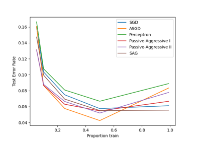
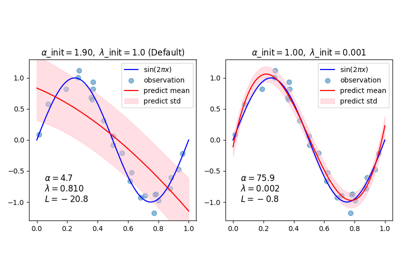
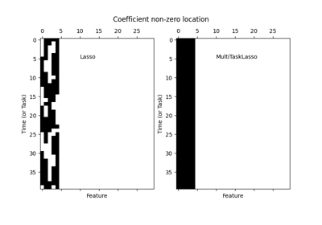
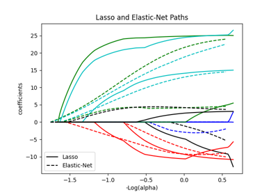
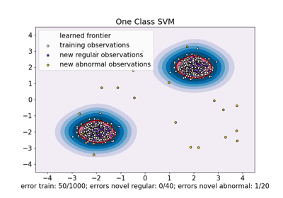

Generalized Linear Models¶
Examples concerning the sklearn.linear_model module.


Comparing various online solvers
Comparing various online solvers

Curve Fitting with Bayesian Ridge Regression
Curve Fitting with Bayesian Ridge Regression


Fitting an Elastic Net with a precomputed Gram Matrix and Weighted Samples
Fitting an Elastic Net with a precomputed Gram Matrix and Weighted Samples

HuberRegressor vs Ridge on dataset with strong outliers
HuberRegressor vs Ridge on dataset with strong outliers

Joint feature selection with multi-task Lasso
Joint feature selection with multi-task Lasso



Lasso and Elastic Net


MNIST classification using multinomial logistic + L1
MNIST classification using multinomial logistic + L1

Multiclass sparse logistic regression on 20newgroups
Multiclass sparse logistic regression on 20newgroups


One-Class SVM versus One-Class SVM using Stochastic Gradient Descent
One-Class SVM versus One-Class SVM using Stochastic Gradient Descent

Ordinary Least Squares and Ridge Regression Variance
Ordinary Least Squares and Ridge Regression Variance


Plot Ridge coefficients as a function of the regularization
Plot Ridge coefficients as a function of the regularization


Plot multinomial and One-vs-Rest Logistic Regression
Plot multinomial and One-vs-Rest Logistic Regression


Ridge coefficients as a function of the L2 Regularization
Ridge coefficients as a function of the L2 Regularization